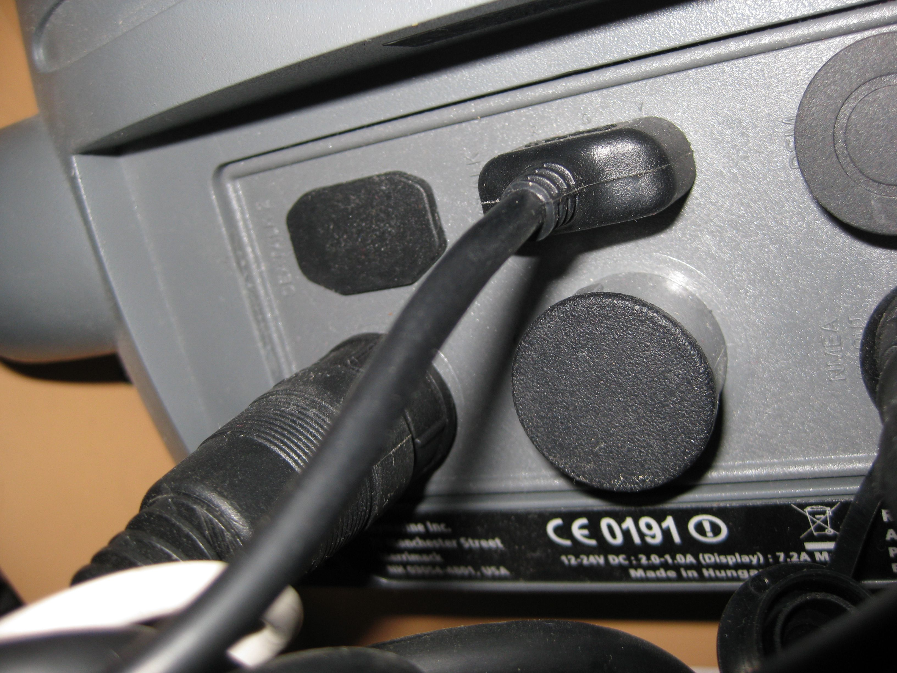

Data Sources
You may retrieve data from different data sources as described below.
 Bluetooth
Bluetooth
You may use Bluetooth to retrieve NMEA data if your device is capable to send Bluetooth over a data protocol called Radio Frequency Communication (RFCOMM).
In order to use it you must enable the Bluetooth receiver on your computer as well. It may be required to provide a Bluetooth password in order to connect to your device.
Note: This is being requested by the operating system and does not appear within the application.
Hint: Many Bluetooth devices use 0000 or 1234 as inital password.
Note: Bluetooth on Linux is currently not supported
Serial Provider
Serial Ports may be used to retrieve NMEA data. This interface is also known as RS232 or COM Ports and usually consists of a nine pole plug you put into your computer.
Note: On linux this provider may fail, if the device it not a true serial device causing the application to crash.
On some rare laptops the automatic detection for serial port may fail causing the application to hang. You can circumvent this situation by setting manual ports within the
preferences.
Connecting Serial Marine Equipment
For the NMEA 0183 unfortunately no standardized connector exists which is why every company uses its own connector.
Most of them offer adapter cables that have the manufacturer plug on one side and a 9 pole plug for the computer on the other side.
There is no electrical voodoo involved in these kinds of cables but all of them cost a fair amount of money probably due to their robustness.
You may find these cables by searching on the Internet as some marine shops offer them. The following section outlines what kind of connectors the manufacturer use for NMEA-0183.
Note that neither NMEA2000 nor ethernet based networks are supported and your device may offer only connectors for these. This includes manufacturer protocols such as SeaTalk or NavNet.
Raymarine
The Raymarine connector is a 5-pin round plug as you can see in this picture.

Examplary backside of a raymarine device:
To the lower left is the power connector pluged-in. The top left connector is a SeaTalk² connector which
is covered by a protector. The top middle connector is a 3 pin SeaTalk Cable where the bottom middle connector is for radar (also covered). The top right connector may be used for a digital sounder
where as the lower right connector (which can barely be seen) is the NMEA0183 connector that is currently in use.

Furono
Please send in any information you have.
Lowrance
Lowrance devices use a combined power and data cable adapter where some wires are being used as power supply and some wires being used as NMEA 0183 output.
Please consult the manual for further instruction.
Garmin
GPSMAP 6000/7000 devices use a 19pin connector cable where 4 pins are being used for NMEA0183 transmissions. Please consult the technical installation instructions.
NMEA interface boxes
There are many NMEA 0183 interface boxes available that allow to connect raw wires to them.
For example Brookhouse offers a NMEA Multiplexer that can handle NMEA0183 via serial, USB and Bluetooth connectors.USB
USB is not directly supported. However many devices are capable to emulate a serial port through a native driver in which case you have a chance your device may work.
Hint: If you want to see the software's output with your hand held GPS device this may be done by setting the device to output NMEA 2.3 sentences and connecting afterwards.